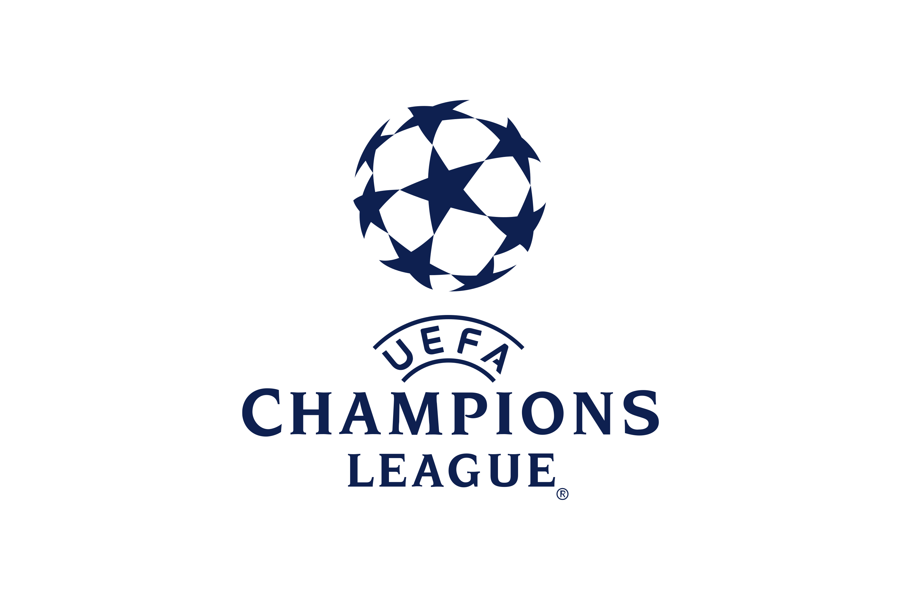

Berita Terkini
Pertandingan
Liverpol raih hasil imbang lawan Chelsea
Liverpool dan Chelsea bermain imbang tanpa gol pada pertandingan
lanjutan Premier League. Chelsea sempat unggul melalui gol Kai
Havertz di menit 51, namun gol Havertz dianulir oleh VAR.
Liverpool juga mendapatkan peluang melalui tembakan Joe Gomez dan
Fabinho pada babak pertama, namun tidak membuahkan hasil.
Line-up Liverpool melawan Chelsea
Joe Gomez, Joel Matip, dan Kostas Tsimikas bermain di belakang,
Curtis Jones kembali ke tengah lapangan. Firmino dan Nunez mengisi
lini serang.
Starting: Alisson, Gomez, Matip, Konate,
Tsimikas, Fabinho, Henderson, Jones, Jota, Firmino, Nunez
Subs: Kelleher, Milner, Salah, Gakpo, Robertson,
Carvalho, Arthur, Phillips, Alexander-Arnold
Transfer Pemain
Menurut sumber terpercaya Cesar Luis Merlo, Liverpool bersama Man
United dan Arsenal sedang mencoba mendatangkan Alexis Mac Allister
musim panas ini. Dua tim yang disebutkan sedang melakukan
pembicaraan dengan pemain yang bersangkutan.
Menurut Relevo, Liverpool & Bayern Munich sangat tertarik pada
gelandang Eintracht Frankfurt Daichi Kamada (26). Sedangkan Sky
Sports Germany mengklaim bahwa Bayern Munchen tidak dalam
perebutan Kamada.
Liverpool tertarik pada pemain Chelsea Conor Gallagher.
Ketertarikan mencuat setelah Liverpool membutuhkan gelandang baru
dan pemain homegrown untuk musim depan. (Nizaar Kinsella)
Sejarah
Liverpool Football Club (dikenal pula sebagai Liverpool atau The
Reds) adalah sebuah klub sepak bola profesional asal Inggris yang
berbasis di Liverpool. Didirikan pada tahun 1892, Liverpool kemudian
bergabung dengan Football League di tahun berikutnya dan sejak
pembentukannya memainkan pertandingan kandang mereka di Stadion
Anfield yang terletak sekitar 4,8 km dari pusat kota.
Pada kompetisi domestik, Liverpool telah memenangkan 19 Gelar Liga,
8 Piala FA, rekor 9 Piala Liga dan 16 Community Shield FA. Pada
kompetisi internasional, Liverpool telah memenangkan 6 Piala Eropa,
3 Piala UEFA, 4 Piala Super UEFA—rekor terbanyak di Inggris—dan 1
Piala Dunia Antarklub FIFA. Liverpool memantapkan dirinya sebagai
salah satu klub besar di tingkat domestik serta Eropa pada era
1970an dan 1980an, ketika Bill Shankly, Bob Paisley, Joe Fagan, dan
Kenny Dalglish, memimpin klub untuk meraih 11 gelar Liga dan 4 Piala
Eropa. Liverpool kemudian memenangkan kembali 2 Piala Eropa pada
tahun 2005 dan 2019 di bawah pelatih Rafael Benitez dan Jürgen
Klopp; Klopp kemudian memimpin Liverpool untuk meraih Gelar Liga
ke-19 di tahun 2020, yang merupakan gelar liga pertama Liverpool di
era Liga Utama Inggris.
Pemain

Daftar Pemain Liverpool musim 2022/2023:
Penjaga Gawang
- Alisson Becker
- Caoimhin Kelleher
- Adrian San Miguel
Pemain Bertahan
- Joe Gomez
- Virgil van Dijk
- Ibrahima Konate
- Kostas Tsimikas
- Calvin Ramsay
- Andy Robertson
- Joel Matip
- Rhys Williams
- Nathaniel Phillips
- Trent Alexander-Arnold
Gelandang
- Fabinho
- Thiago Alcantara
- James Milner
- Naby Keita
- Jordan Henderson
- Alex Oxlade-Chamberlain
- Curtis Jones
- Harvey Elliott
- Arthur Melo
- Stefan Bajcetic
Penyerang
- Roberto Firmino
- Mohamed Salah
- Cody Gakpo
- Diogo Jota
- Luis Diaz
- Darwin Nunez
- Fabio Carvalho
Kompetisi
Premier League

Gelar: Liverpool memiliki 19 gelar
Liga Inggris.
Update: Liverpool kini berada di
peringkat 8 klasemen sementara.
Terakhir juara: Musim 2019/2020
The FA Cup
Gelar: Liverpool memiliki 8 gelar
Piala FA.
Update: Liverpool telah tersingkir
pada babak kelima Piala FA dari Brighton.
Terakhir juara: Musim 2021/2022
EFL Cup
Pertandingan terakhir:
Gelar: Liverpool memiliki 9 gelar
Piala Liga.
Update: Liverpool telah tersingkir
pada 16 Besar Carabao Cup dari Manchester City.
Terakhir juara: Musim 2021/2022
UEFA Champions League

Gelar: Liverpool memiliki 6 gelar
Liga Champions.
Update: Liverpool telah tersingkir
pada 16 Besar Liga Champions dari Real Madrid.
Terakhir juara: Musim 2018/2019